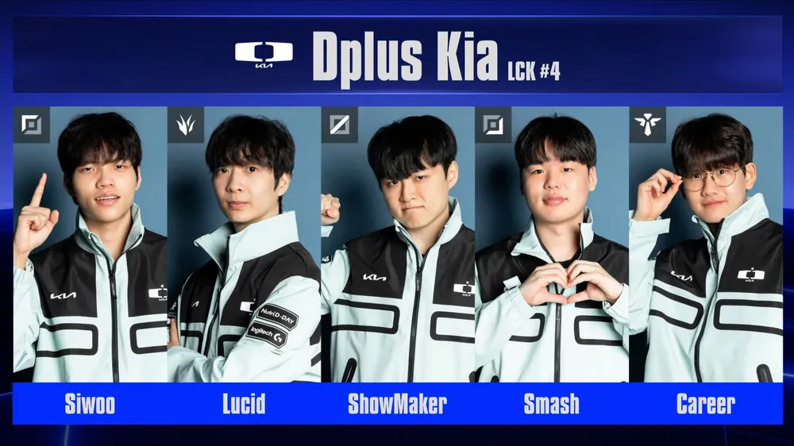

g2와t1을 꺾고 8강 진출전에서 mkoi를 상대로 2:0 승리를 거두며 스위스스테이지 전승으로 가장 먼저 롤드컵 8강 진출을 확정 지었으며
팀명을 디플러스 기아로 개편한 이후 처음으로 8강 진출에 성공 ㅊㅊ

g2와t1을 꺾고 8강 진출전에서 mkoi를 상대로 2:0 승리를 거두며 스위스스테이지 전승으로 가장 먼저 롤드컵 8강 진출을 확정 지었으며
팀명을 디플러스 기아로 개편한 이후 처음으로 8강 진출에 성공 ㅊㅊ
3승했음 티원 상대로 승 엠코이상대로 2승
아니네 3승이네
근데 코이가 아니라
g2 - t1 - koi 순이네
ㄴㄴ3승 해야 8강 진출인데 2승까진 단판이고 마지막 3승판에선 3판2선승제 디플러스 기아는 g2한테 1승 t1한테 1승하고 mkoi랑 3판2선승제 해서 이긴거
아 오늘 3라운드는 3판 2선승제야?
ㅇㅇ2승 적립하고 8강진출 라운드 이거나 2패 적립 하고 탈락 라운드면 3판2선승제
한화 1승2패 했고 딮기는 3승
젠지 2승 후 3R 경기중
T1은 1승1패 3R 대기중인거지?
한국팀 잘해라 한국팀끼리 결승가라~
라이온 잘하는가 했는데 졌구나
라이온 잘했어
근데 딥기가 더잘했어...;;
어 낼 아침 8시
8강진출 걸린 라운드 , 탈락걸린라운드 3판2선 나머지는 단판 녹아웃가면 5판3선
아 ㄱㅅㄱㅅ 내가잘못알앗네
승상..
대 황 딮
슼빠지만 어디든 응원한다 ㅋ 한국팀 우승 ㄱㄱ
대 황 딮
씨맥이 감독인가? 유관이후로 잘나가네
근데 오늘 씨맥 표정 개썩어있었음 ㅋㅋㅋㅋㅋ
안썩은젹이 없잖아 ㅋㅋ
순수 피지컬로 겨우 이긴거고 전략적 움직임은 다 실패함 그러니 표정이 개썩었지 ㅋㅋ
그럴만 함, 이기기는 했지만 경기력이 진짜 안 좋았거든
딮기가 잘해서 이긴 게 아니라
딮기가 못했는데 상대팀이 더 못해서 이긴 느낌이라 감독 입장에서는 화가 날만 함
진짜는 8강부터인데 좋은 성적 가져가기를
윗댓 말대로 피지컬로 찍었거든 근데 씨맥이 항상 말하고 항상 원하는건 콜없는 한타같이 모두가 같은 판단 같은 호흡을 맞추는걸 원하는건데 이거에 완벽히 위배되는 모습이 나와서 ㅋㅋ
솔직히 씨맥이 원하는 환상의 한타같은건 항시 해낼 수 있는건 아니긴하잖음 ㅋㅋㅋ 그러니까 맨날 썩어있구나
기억해라
담원은 가난할 때 가장 강력하다
시우ㅜㅜㅜㅜㅜㅜㅜㅜ~
방금 젠지도 통과
한생은 1승2패존으로...
미띤ㅋㅋ
8강 제발 LCK 내전 피해줘
티~원
8강부터 진짜 씨맥 명장병만 안걸렸으면 좋겠다
드디어 2승이후 3패에서 벗어났구나 ㅋㅋㅋ
티원 상대할 때 엄청 잘하던데
올해 한국팀들 보면
쇼메랑 제카중에 누가 먼저 2회 롤드컵 우승할것인가
쵸비는 과연 올해만큼은 성불할 수 있을것인가
빠-카는 럭키세븐을 달성할 수 있을것인가
흥미진진 그 자체
LCK 4시드 롤드컥우승징크스 유지되나
G2, T1 잡고 3전 전승이면 이번엔 진짜 기대해 봐도 되는 거냐 ㅋㅋ 디플 가자
보이스 들으면 진짜 정신없고 체계없이 오더남발하드라ㅋㅋㅋ
시우 돌아왔나
딮기 돈못주는 거지팀에서 우승신화까지 드라마 ㄱㄱ
2승해야 8강 가는거야?